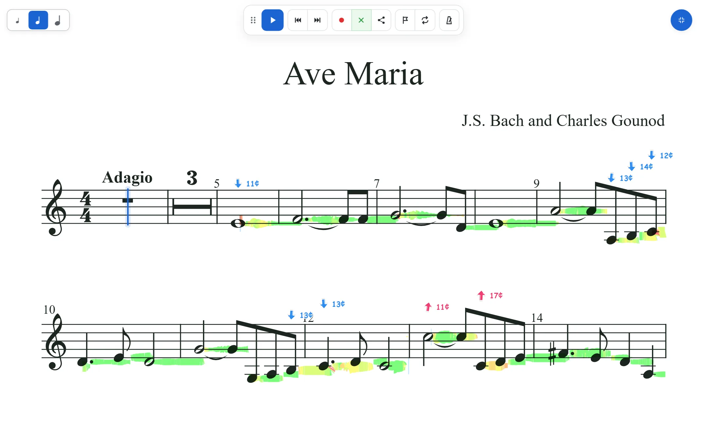
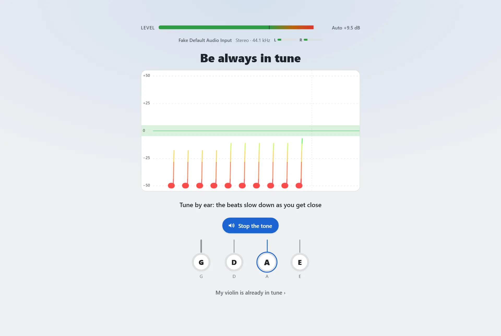
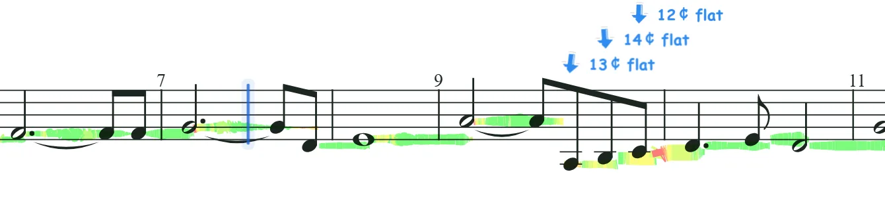
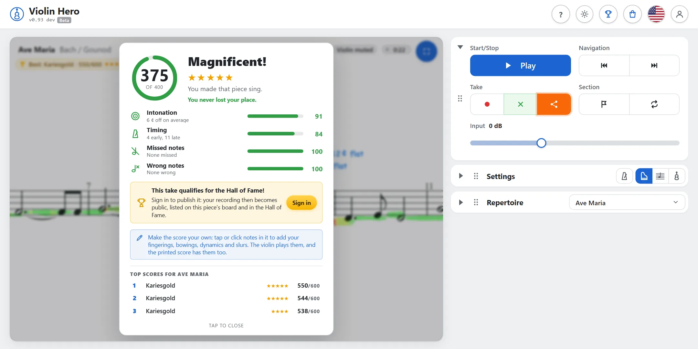
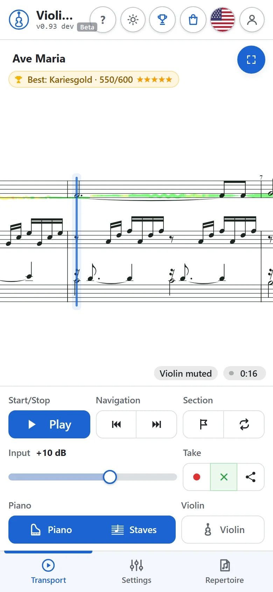
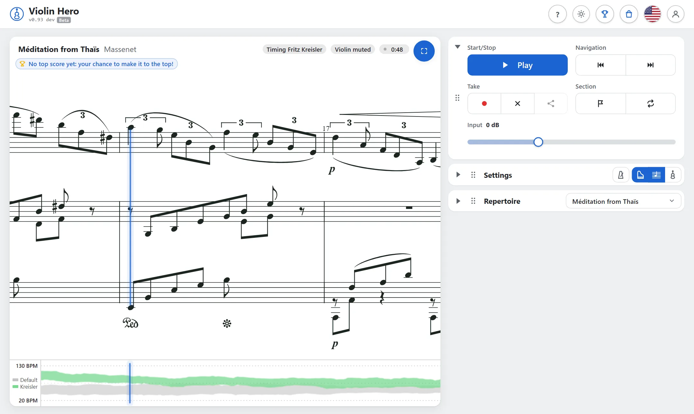
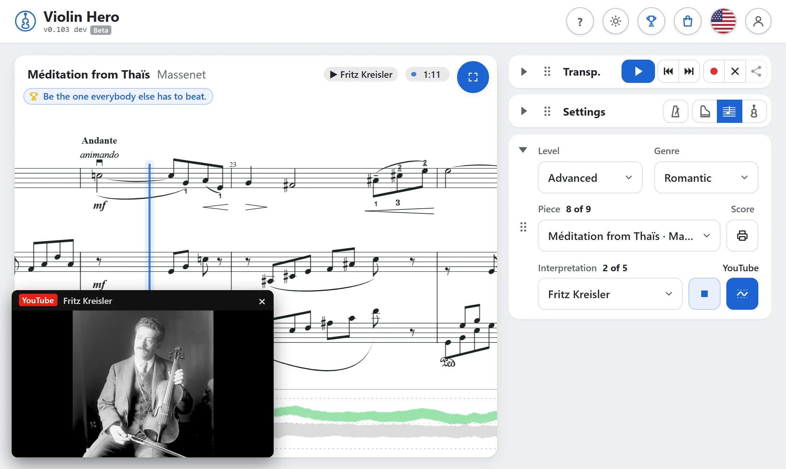
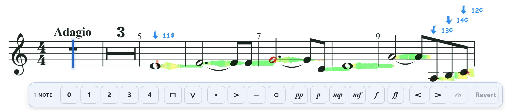
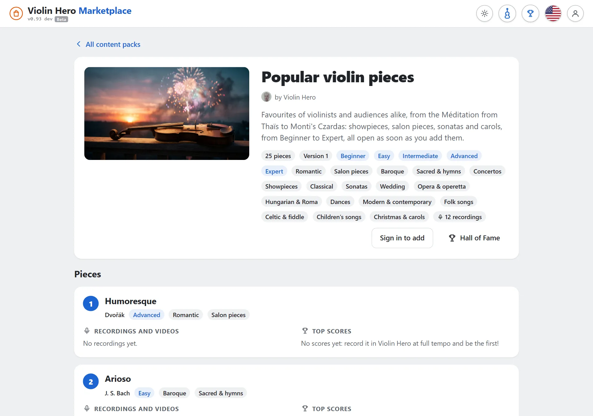

Mitspielen. Besser werden.
Schalte die Violine aus, spiel ihre Stimme mit dem Klavier, und Violin Hero zeichnet dein Spiel in die Noten und sagt dir, wie es lief.

Los geht’s
Fünf Minuten vom Öffnen der App bis zu deiner ersten Wertung.
01 Stimmen
Jeder Start beginnt mit kurzem Stimmen. Erlaube das Mikrofon, spiel deine A-Saite, dann D, G und E. Die Linie steigt zur Mitte, je näher du kommst, und wird grün, sobald die Saite stimmt.
Lieber nach Gehör? Die Tontaste spielt den Ton der Saite. Schon gestimmt? Meine Geige ist schon gestimmt springt weiter. Beim Stimmen stellt die App auch den Pegel des Mikrofons für die Aufnahme ein.


02 Stück wählen und spielen
Wähle ein Stück unter Repertoire nach Schwierigkeitsgrad (Anfänger bis Virtuos), Genre und Stück. Drück Start: Klavier und Violine spielen, während die blaue Linie der Musik folgt. Zieh die Noten, um dich darin zu bewegen.
- Start spielt und pausiert; Zurück und Vor gehen einen Takt weiter (zweimal drücken: an den Anfang oder ans Ende).
- Einstellungen enthält das Tempo, einen Klick zum Mitspielen, den Klang des Klaviers und Schalter für Klavier, seine Noten und die Violine.
- Eingang stellt den Pegel des Mikrofons ein: beim Spielen sollte er im Grünen sein.
- Die Bereiche klappen mit ihrem Dreieck ein und lassen sich an ihrem Griff verschieben, so hast du griffbereit, was du brauchst.
Die ersten Stücke sind die des Startpakets. Weitere werden frei, während du übst, und noch mehr kommen mit Content Packs (siehe Der Marketplace).
03 Dich aufnehmen
Setz kabelgebundene Kopfhörer auf und drück Aufnehmen. Die Violine verstummt, ein Einzähler klickt, wenn die Violine gleich beginnt, und das Klavier begleitet dich. Während du spielst, wird eine Linie in die Violinstimme gezeichnet, genau auf deiner Tonhöhe:
- sauber
- etwas daneben
- deutlich daneben
- ein Ton nicht gehört

Drück noch einmal Aufnehmen zum Beenden, oder spiel bis zum Schluss. Deine Aufnahme läuft sofort mit dem Klavier ab, und ihre Linie bleibt in den Noten. Jede Aufnahme steht unter Interpretation, so kannst du sie später wieder anhören.
Bitte kabelgebundene Kopfhörer. Über Lautsprecher hört das Mikrofon auch das Klavier, und Bluetooth-Kopfhörer hinken hinterher.
04 Deine Wertung
Spiel ein Stück von Anfang bis Ende, und du bekommst eine Wertung: Punkte für Intonation, Timing, fehlende und richtige Töne und, mit steigendem Schwierigkeitsgrad, für Dynamik, Triller und deinen Klang. Sie sagt, was gut lief, und gibt dir einen Tipp für das nächste Mal.

Melde dich an (die runde Taste oben rechts), damit deine Aufnahmen und dein Fortschritt auf allen Geräten bleiben. Eine ganze Aufnahme in 100 % Tempo kannst du dann in die Bestenliste des Stücks und die Hall of Fame veröffentlichen. Alles andere geht auch ohne Konto.
05 Auf dem Handy
Auf dem Handy füllen die Noten den oberen Teil des Bildschirms, und die Bedienung liegt unten in drei Tabs: Transport, Einstellungen und Repertoire. Wisch zwischen ihnen oder tipp auf einen Tab.
Dreh das Handy quer für breitere Noten, mit der Bedienung in einer Spalte daneben.
Du übst jeden Tag auf Handy oder Tablet? Installier Violin Hero als App: dann öffnet es sich vom Home-Bildschirm, ohne den Browser drumherum.


06 Als App installieren
Violin Hero ist eine Website: öffne violinhero.crescendu.com im Browser, und es läuft, ohne vorher etwas herunterzuladen. Es lässt sich aber auch wie eine App installieren, kostenlos und ohne App Store:
- Ein eigenes Symbol auf dem Home-Bildschirm oder Desktop
- Der ganze Bildschirm für die Noten, keine Adressleiste
- Funktioniert offline: Noten und Klänge bleiben auf dem Gerät
- Immer aktuell: neue Versionen kommen von selbst
iPhone und iPad
- Öffne Violin Hero in Safari.
- Tipp auf Teilen (beim iPhone unten, beim iPad oben rechts; in neueren Versionen eventuell hinter ⋯).
- Scroll nach unten, tipp auf Zum Home-Bildschirm, dann Hinzufügen.
Nimm Safari: in Chrome oder einem anderen Browser auf iPhone oder iPad öffne die Seite zuerst in Safari (neuere iOS-Versionen bieten „Zum Home-Bildschirm“ auch im Teilen-Menü von Chrome). Violin Hero erinnert dich mit einer kleinen Karte oben daran.
Android-Handys und -Tablets
- Öffne Violin Hero in Chrome.
- Tipp oben rechts auf das Menü ⋮.
- Tipp auf App installieren (oder Zum Startbildschirm hinzufügen), dann Installieren.
In Samsung Internet: das Menü ☰ unten, dann Seite hinzufügen zu → Startbildschirm. Chrome bietet die Installation manchmal von selbst unten am Bildschirm an.
Windows, Mac oder Chromebook
- Öffne Violin Hero in Chrome oder Edge.
- Klick auf das Installieren-Symbol rechts in der Adressleiste und dann auf Installieren.
Kein Symbol? In Chrome: Menü ⋮ → Streamen, speichern und teilen → Seite als App installieren; in Edge: Menü … → Apps → Diese Website als App installieren. In Safari auf dem Mac (ab macOS Sonoma): Ablage → Zum Dock hinzufügen.
Öffne Violin Hero nach der Installation über sein Symbol. Beim ersten Zuhören fragt es noch einmal nach dem Mikrofon: erlaube es, dann merkt es sich das. Angemeldet sind dein Konto, deine Aufnahmen und freigeschalteten Stücke in App und Browser dieselben.
Mehr entdecken
Was aus dem Üben ein Vorspielen macht.
07 Echte Interpretationen
Große Geiger spielen nicht wie ein Metronom. Für viele Stücke bietet Interpretation im Repertoire Aufnahmen berühmter Interpreten, von Fritz Kreisler bis zu den Stars von heute. Wähl eine, und Violin Hero richtet sein Klavier Takt für Takt nach dieser Aufführung: es atmet, wird langsamer und drängt genau dort, wo sie es tun. Spiel und nimm auf mit ihrer Phrasierung statt mit starrem Tempo.

Drück ▶ neben der Liste (oder I), um die Aufnahme selbst zu hören, während die Noten ihr folgen. Deine eigenen Aufnahmen stehen in derselben Liste, nach den Interpretationen.
08 Mit YouTube spielen
Manche Interpretationen sind YouTube-Videos. Drück ▶, und das Video öffnet sich in einem kleinen Fenster, während die Noten genau mitlaufen und die blaue Linie jedem Rubato folgt. Zieh das Fenster an seiner Leiste, wohin du willst, und an seiner Ecke größer; spring in den Noten oder im Video, und das andere folgt.

09 Vibrato, Glissandi und Triller
Violin Hero hört mehr als richtig und falsch. Ab dem Schwierigkeitsgrad Mittel erscheint kurz vor langen Tönen ein kleines Herz: hier passt ein Vibrato. Hört die App eins, leuchtet deine Linie pink und schwingt mit, und je breiter und gleichmäßiger dein Vibrato, desto größer die Feier.
10 Eine Stelle üben
- Marke: drück sie im ersten Takt einer schwierigen Stelle und noch einmal in ihrem letzten. Die Stelle wird in den Noten markiert und wiederholt sich, bis du Wiederholen ausschaltest. Zieh an den Enden der Markierung, um sie zu ändern.
- Eine Schleife aufnehmen: ist eine Stelle markiert, spielt Aufnehmen sie immer wieder und nimmt jeden Durchgang auf, so hörst du, wie du besser wirst.
- Tempo macht ein Stück langsamer (das Klavier klingt trotzdem natürlich), bis du es kannst; dann wieder schneller. Nur Aufnahmen in 100 % Tempo kommen in die Hall of Fame.
- Klick fügt ein Metronom auf jedem Schlag hinzu, und Ausdruck lässt das Klavier wie ein Mensch spielen statt wie eine Maschine.
11 Deine eigenen Noten
Klick einen Ton an, um ihm einen Fingersatz, einen Bogenstrich, Staccato, einen Akzent oder ein Tenuto zu geben; einem einzelnen Ton auch eine Dynamik oder eine Fermate; wähl zwei (Umschalt-Klick oder langes Drücken auf dem Touchscreen) für einen Bogen, ein Crescendo, ein Diminuendo oder ein rit. Die Violine spielt deine Zeichen, und ↺ Bearbeitet nimmt sie alle wieder weg.

- Drucken: die Taste Noten neben dem Stück macht ein PDF der Violinstimme mit deinen Zeichen (angemeldet).
- Deine Zeichen teilen: ist keine Aufnahme gewählt, schickt Teilen einen Link zu deinen bearbeiteten Noten. Die Fingersätze einer Lehrkraft kommen als eigene Fassung des Stücks an.
12 Teilen und messen
Teilen schickt einen Link: wer ihn öffnet, hört deine Aufnahme mit dem Klavier und sieht deine Linie in den Noten.
Veröffentliche eine ganze Aufnahme in 100 % Tempo aus ihrer Wertung, um in der Bestenliste des Stücks und der Hall of Fame aufzusteigen: die besten Spieler, beste Intonation, bestes Timing, das meiste Üben.
Unter den Noten siehst du, wie viele andere gerade dasselbe Stück üben.
Im Kontomenü: schick deinen Link an Freunde. Fangen sie an zu üben, bekommst du Karma, und die Hall of Fame zeigt die besten Einladenden.
Profil, im Kontomenü: dein Spitzname, Bild, deine Stadt und ein paar Worte über dich, mit deinem Üben dieser Woche, deinen Stücken, Highlights und Erfolgen. Mach es öffentlich, dann kann es jeder sehen, und die Hall of Fame verlinkt deinen Namen damit.
13 Der Marketplace
Mehr Musik gibt es in Content Packs: Sammlungen von Stücken mit Noten, Schwierigkeitsgrad, Genres und Aufnahmen zum Mitspielen, zusammengestellt von Lehrkräften, Arrangeuren und Interpreten. Du findest sie im Marketplace, der Taschen-Taste oben. Das Pack Popular violin pieces bringt 25 Lieblingsstücke, von der Méditation bis zu Montis Czardas.

Entdecken öffnet die Seite eines Packs: jedes Stück mit Komponist, Schwierigkeitsgrad und Genre, einem Blick in die Violinstimme, seinen Aufnahmen und Videos zum Anhören und seinen Bestenlisten, jede Aufnahme mit dem Klavier abspielbar.
Melde dich an und drück Zu Violin Hero hinzufügen. Seine Stücke erscheinen in deinem Repertoire unter ihrem Schwierigkeitsgrad und Genre, alle sofort frei, auf jedem Gerät, auf dem du angemeldet bist.
Verbessert jemand ein Pack, sagt Violin Hero dir, was neu ist, und fragt: Aktualisieren, deine Version behalten oder später entscheiden.
Nutzt deine Lehrkraft Crescendu, erscheinen Packs nur für ihre Schülerinnen und Schüler in einem eigenen Bereich, sichtbar nur für dich und deine Mitschüler.
Klick auf den Namen eines Creators, um zu sehen, wer dahintersteckt, was er unterrichtet oder spielt, und alle seine Packs.
Unter Deine Content Packs nimmt Entfernen ein Pack wieder aus deinem Violin Hero. Das Startpaket gehört zu Violin Hero und bleibt immer.
Manche Packs können etwas kosten: Kaufen öffnet eine sichere Kasse, die Rechnung kommt per E-Mail, und das Pack gehört dann dir wie jedes andere.
Du willst deine eigenen Stücke teilen? Lehrkräfte und Musiker machen Packs auf der Seite Creator, für alle oder nur für ihre Schülerinnen und Schüler: siehe die Anleitung für Creator.
Außerdem oben: hell oder dunkel und fünf Farbschemata (die Sonnen-Taste), Englisch oder Deutsch (die Flagge) und diese Anleitung (das ?).
14 Tasten
- P
- Start / Pause
- R
- Aufnehmen
- I
- Die Interpretation oder Aufnahme anhören
- ← →
- Einen Takt zurück / vor
- Alt ← →
- Anfang / Ende der Zeile
- ↑ ↓
- Die Zeile darüber / darunter (Seitenansicht)
- Umschalt ← →
- Eine Stelle markieren
- M
- Marke
- L
- Wiederholen an / aus
- V
- Violine an / aus
- [ ]
- Voriges / nächstes Stück
- ?
- Diese Seite
Danksagung
Der Flügel ist der Salamander Grand Piano von Alexander Holm (CC BY 3.0). Die Klaviere und die Violine stammen aus VSCO 2 Community Edition von Versilian Studios (CC0; Upright Piano von Simon Dalzell, Ivy Audio, mit Erlaubnis). Die Noten sind gemeinfreie Stiche von musescore.com-Nutzern aus PDMX, gesetzt mit OpenSheetMusicDisplay. Videos werden von YouTube abgespielt.